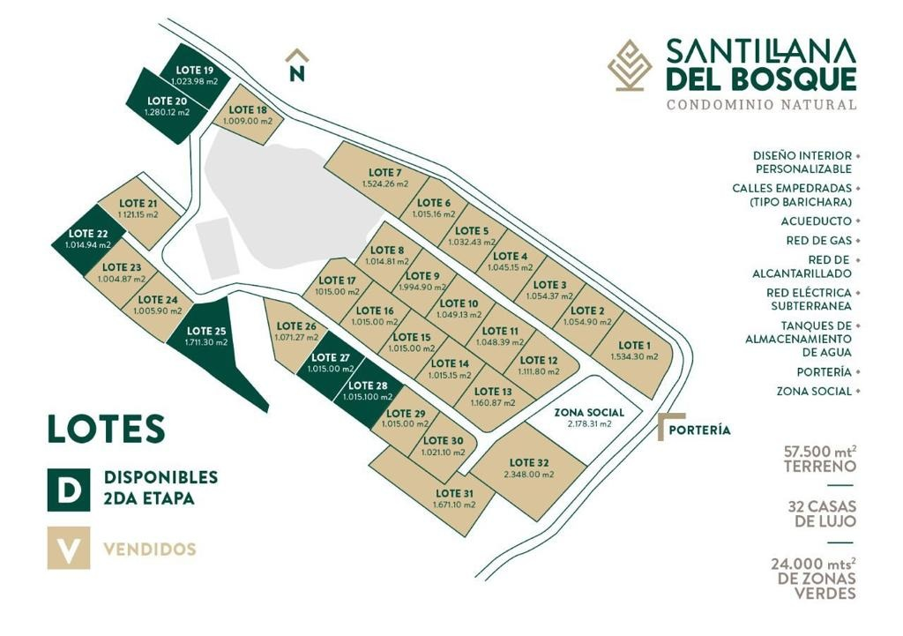
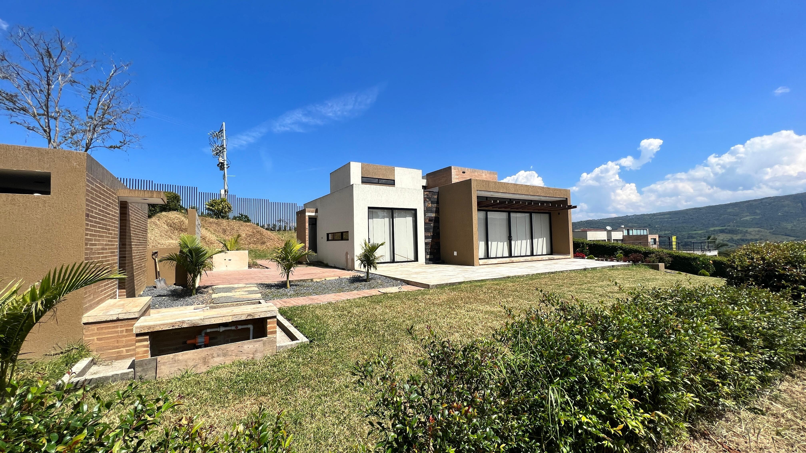
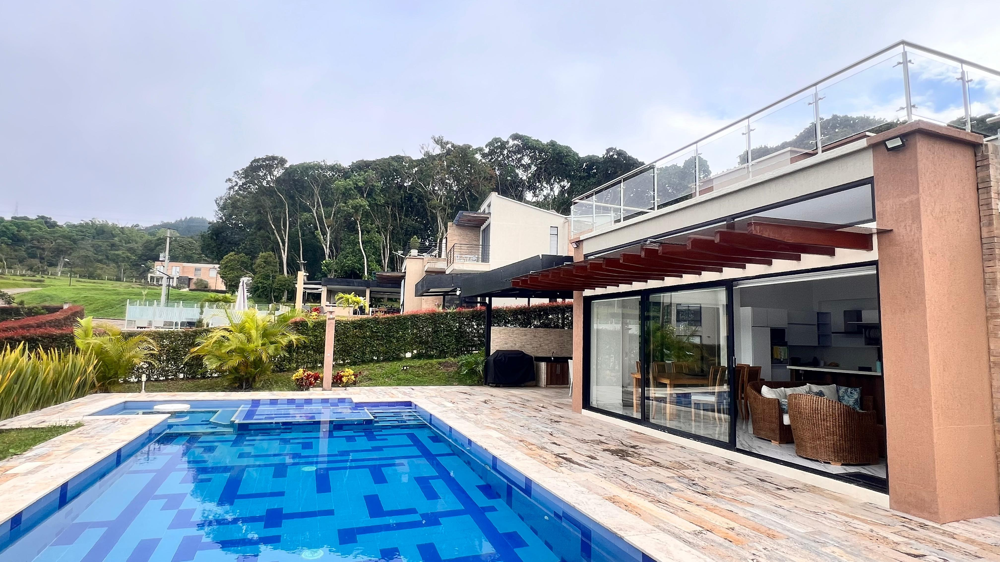
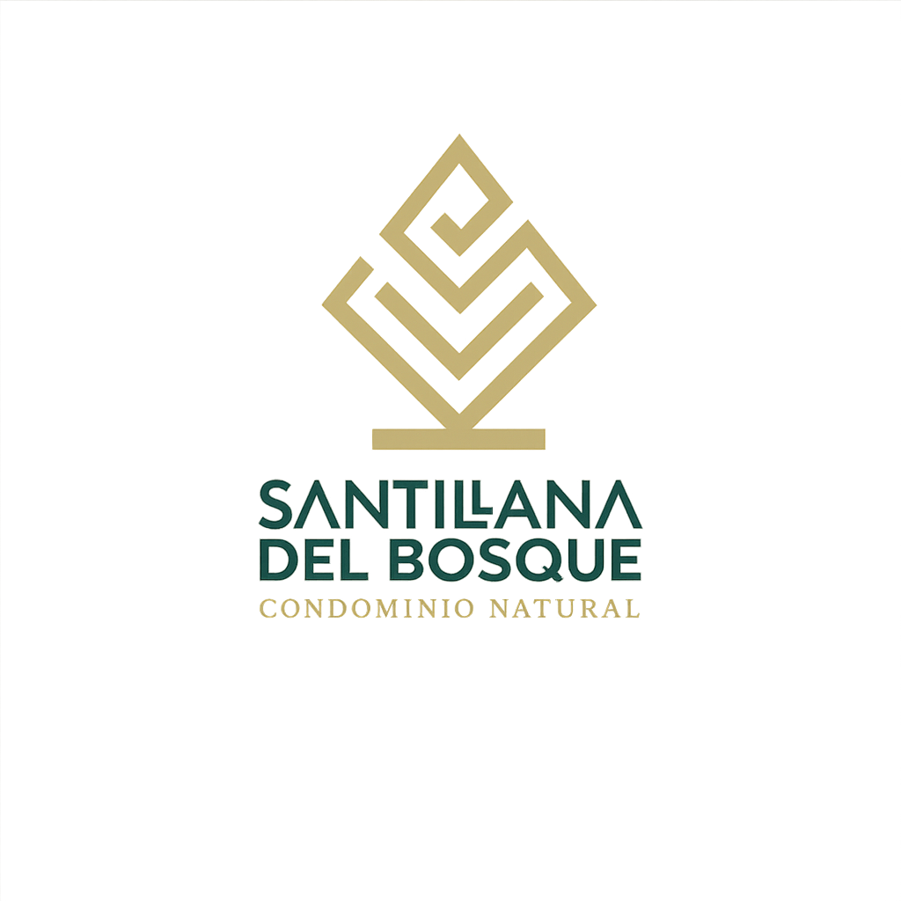

Plano General del Proyecto

Galería del Proyecto




Lotes campestres desde 1.000 m² en Puente Nacional, Santander. Construye la casa de tus sueños en un entorno único.
24.000 m² de zonas verdes.
Desde 1.000 m².
Acueducto y almacenamiento de agua.
Redes subterráneas y gas.
Portería y acceso controlado.
Excelente oportunidad de inversión.



Recibe información actualizada sobre disponibilidad y precios.
Agendar VisitaSantilana del Bosque se encuentra en un entorno privilegiado de Puente Nacional, Santander, rodeado de naturaleza, tranquilidad y excelentes vías de acceso.
Conoce el proyecto desde cualquier lugar a través de nuestros videos.
Santilana del Bosque se encuentra en un entorno privilegiado de Puente Nacional, Santander, rodeado de naturaleza, tranquilidad y excelentes vías de acceso.